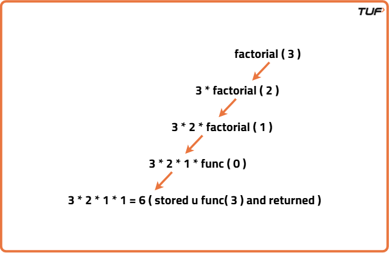

Factorial of a Number : Iterative and Recursive
Problem Statement: Given a number X, print its factorial.
To obtain the factorial of a number, it has to be multiplied by all the whole numbers preceding it. More precisely X! = X*(X-1)*(X-2) … 1.
Note: X is always a positive number.
Examples
Example 1: Input: X = 5 Output: 120 Explanation: 5! = 5*4*3*2*1 Example 2: Input: X = 3 Output: 6 Explanation: 3!=3*2*1
Disclaimer: Here is the practice link for Iterative and Recursive Problems to help you assess your knowledge better. It's highly recommend trying to solve it before looking at the solution.
Iterative Solution
Algorithm
- Since the factorial of a number
Xis the product of the number itself and all its preceding positive integers, we can calculate it using a loop. - We initialize a variable (say
fact) to 1, which will hold the running product. - We run a loop from
i = 1toX. - In each iteration, we multiply
factbyi(i.e.,fact = fact * i). - After the loop ends,
factwill contain the factorial ofX.
Code
#include <iostream>
using namespace std;
// Function to calculate factorial of a number
int factorial(int X) {
int ans = 1;
// Loop from 1 to X to compute factorial
for (int i = 1; i <= X; i++) {
ans = ans * i;
}
// Return the final result
return ans;
}
int main() {
// Input value for which factorial is to be calculated
int X = 5;
// Call the factorial function and store the result
int result = factorial(X);
// Print the result
cout << "The factorial of " << X << " is " << result;
return 0;
}
Complexity Analysis
Time Complexity: O(n)
Space Complexity: O(1)
Recursive Solution
Algorithm
- The factorial of a number
Ncan be calculated by multiplying all natural numbers from 1 toN. - We can visualize this using recursion:
factorial(N) = N * factorial(N - 1)- This means the factorial of
Nis the product ofNand the factorial ofN - 1. - We define a base case:
- If
N == 0, we return 1, since0! = 1by definition.
- If
- This approach breaks the problem into smaller subproblems, and the results of each subproblem are multiplied together as the recursive calls return.
- The final result is stored and printed as the output of the
factorial(N)function.
Recursion Tree for the following problem can be represented as follows :

Code
#include <bits/stdc++.h>
using namespace std;
// Recursive function to calculate factorial of a number
int factorial(int n) {
// Base case: factorial of 0 is 1
if (n == 0) {
return 1;
}
// Recursive case: n * factorial of (n-1)
return n * factorial(n - 1);
}
int main() {
// Define the number to compute factorial
int n = 3;
// Call the factorial function and print the result
cout << factorial(n) << endl;
return 0;
}
Complexity Analysis
Time Complexity: O(N), Since the function is being called n times, and for each function, we have only one printable line that takes O(1) time, so the cumulative time complexity would be O(N)
Space Complexity: O(N), In the worst case, the recursion stack space would be full with all the function calls waiting to get completed and that would make it an O(N) recursion stack space.